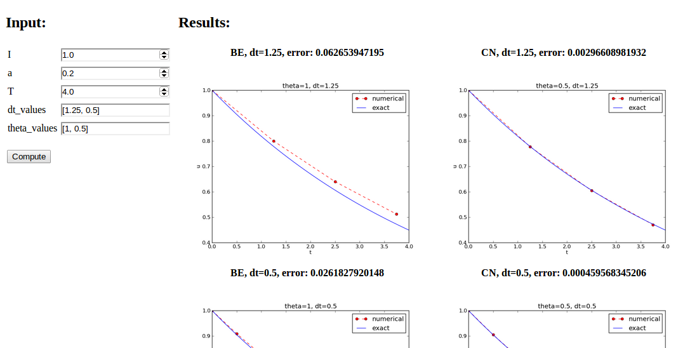

Study Guide: Scientific software engineering for a simple ODE problem
Aug 18, 2014
Creating user interfaces
- Never edit the program to change input!
- Set input data on the command line or in a graphical user interface
- How is explained next
Accessing command-line arguments
- All command-line arguments are available in
sys.argv -
sys.argv[0]is the program -
sys.argv[1:]holds the command-line arguments - Method 1: fixed sequence of parameters on the command line
- Method 2:
--option valuepairs on the command line (with default values)
Terminal> python myprog.py 1.5 2 0.5 0.8 0.4
Terminal> python myprog.py --I 1.5 --a 2 --dt 0.8 0.4
Reading a sequence of command-line arguments
The program decay_plot.py needs this input:- \( I \)
- \( a \)
- \( T \)
- an option to turn the plot on or off (
makeplot) - a list of \( \Delta t \) values
Give these on the command line in correct sequence
Terminal> python decay_cml.py 1.5 2 0.5 0.8 0.4
Implementation
import sys
def read_command_line():
if len(sys.argv) < 6:
print 'Usage: %s I a T on/off dt1 dt2 dt3 ...' % \
sys.argv[0]; sys.exit(1) # abort
I = float(sys.argv[1])
a = float(sys.argv[2])
T = float(sys.argv[3])
makeplot = sys.argv[4] in ('on', 'True')
dt_values = [float(arg) for arg in sys.argv[5:]]
return I, a, T, makeplot, dt_values
Note:
-
sys.argv[i]is always a string - Must explicitly convert to (e.g.)
floatfor computations - List comprehensions make lists:
[expression for e in somelist]
Complete program: decay_cml.py.
Working with an argument parser
Set option-value pairs on the command line if the default value is not suitable:
Terminal> python decay_argparse.py --I 1.5 --a 2 --dt 0.8 0.4
Code:
def define_command_line_options():
import argparse
parser = argparse.ArgumentParser()
parser.add_argument('--I', '--initial_condition', type=float,
default=1.0, help='initial condition, u(0)',
metavar='I')
parser.add_argument('--a', type=float,
default=1.0, help='coefficient in ODE',
metavar='a')
parser.add_argument('--T', '--stop_time', type=float,
default=1.0, help='end time of simulation',
metavar='T')
parser.add_argument('--makeplot', action='store_true',
help='display plot or not')
parser.add_argument('--dt', '--time_step_values', type=float,
default=[1.0], help='time step values',
metavar='dt', nargs='+', dest='dt_values')
return parser
(metavar is the symbol used in help output)
Reading option-values pairs
argparse.ArgumentParser parses the command-line arguments:
def read_command_line():
parser = define_command_line_options()
args = parser.parse_args()
print 'I={}, a={}, T={}, makeplot={}, dt_values={}'.format(
args.I, args.a, args.T, args.makeplot, args.dt_values)
return args.I, args.a, args.T, args.makeplot, args.dt_values
Complete program: decay_argparse.py.
A graphical user interface

Normally very much programming required - and much competence on graphical user interfaces.
Here: use a tool to automatically create it in a few minutes (!)
The Parampool package
- Parampool is a package for handling a large pool of input parameters in simulation programs
- Parampool can automatically create a sophisticated web-based graphical user interface (GUI) to set parameters and view solutions
Making a compute function
- Key concept: a compute function that takes all input data as arguments and returning HTML code for viewing the results (e.g., plots and numbers)
- What we have: decay_plot.py
-
mainfunction carries out simulations and plotting for a series of \( \Delta t \) values - Goal: steer and view these experiments from a web GUI
- What to do:
- create a compute function
- call
parampoolfunctionality
The compute function main_GUI:
def main_GUI(I=1.0, a=.2, T=4.0,
dt_values=[1.25, 0.75, 0.5, 0.1],
theta_values=[0, 0.5, 1]):
The hard part of the compute function: the HTML code
- The results are to be displayed in a web page
- Only you know what to display in your problem
- Therefore, you need to specify the HTML code
Suppose explore solves the problem, makes a plot, computes the
error and returns appropriate HTML code with the plot. Embed
error and plots in a table:
def main_GUI(I=1.0, a=.2, T=4.0,
dt_values=[1.25, 0.75, 0.5, 0.1],
theta_values=[0, 0.5, 1]):
# Build HTML code for web page. Arrange plots in columns
# corresponding to the theta values, with dt down the rows
theta2name = {0: 'FE', 1: 'BE', 0.5: 'CN'}
html_text = '<table>\n'
for dt in dt_values:
html_text += '<tr>\n'
for theta in theta_values:
E, html = explore(I, a, T, dt, theta, makeplot=True)
html_text += """
<td>
<center><b>%s, dt=%g, error: %s</b></center><br>
%s
</td>
""" % (theta2name[theta], dt, E, html)
html_text += '</tr>\n'
html_text += '</table>\n'
return html_text
How to embed a PNG plot in HTML code
Inexplore:
import matplotlib.pyplot as plt
...
# plot
plt.plot(t, u, r-')
plt.xlabel('t')
plt.ylabel('u')
...
from parampool.utils import save_png_to_str
html_text = save_png_to_str(plt, plotwidth=400)
If you know HTML, you can return more sophisticated layout etc.
Generating the user interface
Make a filedecay_GUI_generate.py:
from parampool.generator.flask import generate
from decay_GUI import main
generate(main,
output_controller='decay_GUI_controller.py',
output_template='decay_GUI_view.py',
output_model='decay_GUI_model.py')
Running decay_GUI_generate.py results in
-
decay_GUI_model.pydefines HTML widgets to be used to set input data in the web interface, -
templates/decay_GUI_views.pydefines the layout of the web page, -
decay_GUI_controller.pyruns the web application.
Good news: we only need to run decay_GUI_controller.py
and there is no need to look into any of these files!
Running the web application
Start the GUI
Terminal> python decay_GUI_controller.py
Open a web browser at 127.0.0.1:5000
More advanced use
- The compute function can have arguments of type float, int, string, list, dict, numpy array, filename (file upload)
- Alternative: specify a hierarchy of input parameters with name, default value, data type, widget type, unit (m, kg, s), validity check
- The generated web GUI can have user accounts with login and storage of results in a database
Computing convergence rates
Frequent assumption on the relation between the numerical error \( E \) and some discretization parameter \( \Delta t \):
$$
\begin{equation}
E = C\Delta t^r,
\tag{1}
\end{equation}
$$
- Unknown: \( C \) and \( r \).
- Goal: estimate \( r \) (and \( C \)) from numerical experiments
Estimating the convergence rate \( r \)
Perform numerical experiments: \( (\Delta t_i, E_i) \), \( i=0,\ldots,m-1 \). Two methods for finding \( r \) (and \( C \)):- Take the logarithm of (1), \( \ln E = r\ln \Delta t + \ln C \), and fit a straight line to the data points \( (\Delta t_i, E_i) \), \( i=0,\ldots,m-1 \).
- Consider two consecutive experiments, \( (\Delta t_i, E_i) \) and \( (\Delta t_{i-1}, E_{i-1}) \). Dividing the equation \( E_{i-1}=C\Delta t_{i-1}^r \) by \( E_{i}=C\Delta t_{i}^r \) and solving for \( r \) yields
$$
\begin{equation}
r_{i-1} = \frac{\ln (E_{i-1}/E_i)}{\ln (\Delta t_{i-1}/\Delta t_i)}
\tag{2}
\end{equation}
$$
for \( i=1,=\ldots,m-1 \).
Method 2 is best.
Implementation
Compute \( r_0, r_1, \ldots, r_{m-2} \):
from math import log
def main():
I, a, T, makeplot, dt_values = read_command_line()
r = {} # estimated convergence rates
for theta in 0, 0.5, 1:
E_values = []
for dt in dt_values:
E = explore(I, a, T, dt, theta, makeplot=False)
E_values.append(E)
# Compute convergence rates
m = len(dt_values)
r[theta] = [log(E_values[i-1]/E_values[i])/
log(dt_values[i-1]/dt_values[i])
for i in range(1, m, 1)]
for theta in r:
print '\nPairwise convergence rates for theta=%g:' % theta
print ' '.join(['%.2f' % r_ for r_ in r[theta]])
return r
Complete program: decay_convrate.py.
Execution
Terminal> python decay_convrate.py --dt 0.5 0.25 0.1 0.05 0.025 0.01
...
Pairwise convergence rates for theta=0:
1.33 1.15 1.07 1.03 1.02
Pairwise convergence rates for theta=0.5:
2.14 2.07 2.03 2.01 2.01
Pairwise convergence rates for theta=1:
0.98 0.99 0.99 1.00 1.00
Debugging via convergence rates
Potential bug: missinga in the denominator,
u[n+1] = (1 - (1-theta)*a*dt)/(1 + theta*dt)*u[n]
Running decay_convrate.py gives same rates.
Why? The value of \( a \)... (\( a=1 \))
0 and 1 are bad values in tests!
Better:
Terminal> python decay_convrate.py --a 2.1 --I 0.1 \
--dt 0.5 0.25 0.1 0.05 0.025 0.01
...
Pairwise convergence rates for theta=0:
1.49 1.18 1.07 1.04 1.02
Pairwise convergence rates for theta=0.5:
-1.42 -0.22 -0.07 -0.03 -0.01
Pairwise convergence rates for theta=1:
0.21 0.12 0.06 0.03 0.01
Forward Euler works...because \( \theta=0 \) hides the bug.
This bug gives \( r\approx 0 \):
u[n+1] = ((1-theta)*a*dt)/(1 + theta*dt*a)*u[n]
Software engineering
Goal: make more professional numerical software.Topics:
- How to make modules (reusable libraries)
- Testing frameworks (doctest, nose, unittest)
- Implementation with classes
Making a module
- Previous programs: much repetitive code (esp.
solver) - DRY (Don't Repeat Yourself) principle: no copies of code
- A change needs to be done in one and only one place
- Module = just a file with functions (reused through
import) - Let's make a module by putting these functions in a file:
-
solver -
verify_three_steps -
verify_discrete_solution -
explore -
define_command_line_options -
read_command_line -
main(with convergence rates) -
verify_convergence_rate
Module name: decay_mod, filename: decay_mod.py.
Sketch:
from numpy import *
from matplotlib.pyplot import *
import sys
def solver(I, a, T, dt, theta):
...
def verify_three_steps():
...
def verify_exact_discrete_solution():
...
def u_exact(t, I, a):
...
def explore(I, a, T, dt, theta=0.5, makeplot=True):
...
def define_command_line_options():
...
def read_command_line(use_argparse=True):
...
def main():
...
That is! It's a module decay_mod in file decay_mod.py.
Usage in some other program:
from decay_mod import solver
u, t = solver(I=1.0, a=3.0, T=3, dt=0.01, theta=0.5)
Test block
At the end of a module it is common to include a test block:
if __name__ == '__main__':
main()
- If
decay_modis imported,__name__isdecay_mod. - If
decay_mod.pyis run,__name__is__main__. - Use test block for testing, demo, user interface, ...
Extended test block:
if __name__ == '__main__':
if 'verify' in sys.argv:
if verify_three_steps() and verify_discrete_solution():
pass # ok
else:
print 'Bug in the implementation!'
elif 'verify_rates' in sys.argv:
sys.argv.remove('verify_rates')
if not '--dt' in sys.argv:
print 'Must assign several dt values'
sys.exit(1) # abort
if verify_convergence_rate():
pass
else:
print 'Bug in the implementation!'
else:
# Perform simulations
main()
Prefixing imported functions by the module name
from numpy import *
from matplotlib.pyplot import *
This imports a large number of names (sin, exp, linspace, plot, ...).
Confusion: is a function from numpy? Or matplotlib.pyplot?
Alternative (recommended) import:
import numpy
import matplotlib.pyplot
Now we need to prefix functions with module name:
t = numpy.linspace(0, T, Nt+1)
u_e = I*numpy.exp(-a*t)
matplotlib.pyplot.plot(t, u_e)
Common standard:
import numpy as np
import matplotlib.pyplot as plt
t = np.linspace(0, T, Nt+1)
u_e = I*np.exp(-a*t)
plt.plot(t, u_e)
Downside of module prefix notation
A math line like \( e^{-at}\sin(2\pi t) \) gets cluttered with module names,
numpy.exp(-a*t)*numpy.sin(2(numpy.pi*t)
# or
np.exp(-a*t)*np.sin(2*np.pi*t)
Solution (much used in this course): do two imports
import numpy as np
from numpy import exp, sin, pi
...
t = np.linspace(0, T, Nt+1)
u_e = exp(-a*t)*sin(2*pi*t)
Doctests
Doc strings can be equipped with interactive Python sessions for demonstrating usage and automatic testing of functions.
def solver(I, a, T, dt, theta):
"""
Solve u'=-a*u, u(0)=I, for t in (0,T] with steps of dt.
>>> u, t = solver(I=0.8, a=1.2, T=4, dt=0.5, theta=0.5)
>>> for t_n, u_n in zip(t, u):
... print 't=%.1f, u=%.14f' % (t_n, u_n)
t=0.0, u=0.80000000000000
t=0.5, u=0.43076923076923
t=1.0, u=0.23195266272189
t=1.5, u=0.12489758761948
t=2.0, u=0.06725254717972
t=2.5, u=0.03621291001985
t=3.0, u=0.01949925924146
t=3.5, u=0.01049960113002
t=4.0, u=0.00565363137770
"""
...
Running doctests
Automatic check that the code reproduces the doctest output:
Terminal> python -m doctest decay_mod_doctest.py
Report in case of failure:
Terminal> python -m doctest decay_mod_doctest.py
********************************************************
File "decay_mod_doctest.py", line 12, in decay_mod_doctest....
Failed example:
for t_n, u_n in zip(t, u):
print 't=%.1f, u=%.14f' % (t_n, u_n)
Expected:
t=0.0, u=0.80000000000000
t=0.5, u=0.43076923076923
t=1.0, u=0.23195266272189
t=1.5, u=0.12489758761948
t=2.0, u=0.06725254717972
Got:
t=0.0, u=0.80000000000000
t=0.5, u=0.43076923076923
t=1.0, u=0.23195266272189
t=1.5, u=0.12489758761948
t=2.0, u=0.06725254718756
********************************************************
1 items had failures:
1 of 2 in decay_mod_doctest.solver
***Test Failed*** 1 failures.
Complete program: decay_mod_doctest.py.
Unit testing with nose
- Nose is a very user-friendly testing framework
- Based on unit testing
- Identify (small) units of code and test each unit
- Nose automates running all tests
- Good habit: run all tests after (small) edits of a code
- Even better habit: write tests before the code (!)
- Remark: unit testing in scientific computing is not yet well established
Basic use of nose
- Implement tests in test functions with names starting with
test_. - Test functions cannot have arguments.
- Test functions perform assertions on computed results
using
assertfunctions from thenose.toolsmodule. - Test functions can be in the source code files or be
collected in separate files
test*.py.
Example on a nose test in the source code
Very simple modulemymod (in file mymod.py):
def double(n):
return 2*n
Write test function in mymod.py:
def double(n):
return 2*n
import nose.tools as nt
def test_double():
result = double(4)
nt.assert_equal(result, 8)
Running
Terminal> nosetests -s mymod
makes the nose tool run all test_*() functions in mymod.py.
Example on a nose test in a separate file
Write the test in a separate file, saytest_mymod.py:
import nose.tools as nt
import mymod
def test_double():
result = mymod.double(4)
nt.assert_equal(result, 8)
Running
Terminal> nosetests -s
makes the nose tool run all test_*() functions in all files
test*.py in the current directory and in all subdirectories (recursevely)
with names tests or *_tests.
The habit of writing nose tests
- Put
test_*()functions in the module - When you get many
test_*()functions, collect them intests/test*.py
Purpose of a test function: raise AssertionError if failure
Alternative ways of raising AssertionError ifresult is not 8:
import nose.tools as nt
def test_double():
result = ...
nt.assert_equal(result, 8) # alternative 1
assert result == 8 # alternative 2
if result != 8: # alternative 3
raise AssertionError()
Advantages of nose
- Easier to use than other test frameworks
- Tests are written and collected in a compact and structured way
- Large collections of tests, scattered throughout a directory tree
can be executed with one command (
nosetests -s) - Nose is a much-adopted standard
Demonstrating nose (ideas)
Aim: test functionsolver for \( u'=-au \), \( u(0)=I \).
We design three unit tests:
- A comparison between the computed \( u^n \) values and the exact discrete solution
- A comparison between the computed \( u^n \) values and precomputed verified reference values
- A comparison between observed and expected convergence rates
These tests follow very closely the previous verify* functions.
Demonstrating nose (code)
import nose.tools as nt
import decay_mod_unittest as decay_mod
import numpy as np
def exact_discrete_solution(n, I, a, theta, dt):
"""Return exact discrete solution of the theta scheme."""
dt = float(dt) # avoid integer division
factor = (1 - (1-theta)*a*dt)/(1 + theta*dt*a)
return I*factor**n
def test_exact_discrete_solution():
"""
Compare result from solver against
formula for the discrete solution.
"""
theta = 0.8; a = 2; I = 0.1; dt = 0.8
N = int(8/dt) # no of steps
u, t = decay_mod.solver(I=I, a=a, T=N*dt, dt=dt, theta=theta)
u_de = np.array([exact_discrete_solution(n, I, a, theta, dt)
for n in range(N+1)])
diff = np.abs(u_de - u).max()
nt.assert_almost_equal(diff, 0, delta=1E-14)
Floats as test results require careful comparison
- Round-off errors make exact comparison of floats unreliable
-
nt.assert_almost_equal: compare two floats to some digits or precision
def test_solver():
"""
Compare result from solver against
precomputed arrays for theta=0, 0.5, 1.
"""
I=0.8; a=1.2; T=4; dt=0.5 # fixed parameters
precomputed = {
't': np.array([ 0. , 0.5, 1. , 1.5, 2. , 2.5,
3. , 3.5, 4. ]),
0.5: np.array(
[ 0.8 , 0.43076923, 0.23195266, 0.12489759,
0.06725255, 0.03621291, 0.01949926, 0.0104996 ,
0.00565363]),
0: ...,
1: ...
}
for theta in 0, 0.5, 1:
u, t = decay_mod.solver(I, a, T, dt, theta=theta)
diff = np.abs(u - precomputed[theta]).max()
# Precomputed numbers are known to 8 decimal places
nt.assert_almost_equal(diff, 0, places=8,
msg='theta=%s' % theta)
Test of wrong use
- Find input data that may cause trouble and test such cases
- Here: the formula for \( u^{n+1} \) may involve integer division
Example:
theta = 1; a = 1; I = 1; dt = 2
may lead to integer division:
(1 - (1-theta)*a*dt) # becomes 1
(1 + theta*dt*a) # becomes 2
(1 - (1-theta)*a*dt)/(1 + theta*dt*a) # becomes 0 (!)
Test that solver does not suffer from such integer division:
def test_potential_integer_division():
"""Choose variables that can trigger integer division."""
theta = 1; a = 1; I = 1; dt = 2
N = 4
u, t = decay_mod.solver(I=I, a=a, T=N*dt, dt=dt, theta=theta)
u_de = np.array([exact_discrete_solution(n, I, a, theta, dt)
for n in range(N+1)])
diff = np.abs(u_de - u).max()
nt.assert_almost_equal(diff, 0, delta=1E-14)
Test of convergence rates
Convergence rate tests are very common for differential equation solvers.
def test_convergence_rates():
"""Compare empirical convergence rates to exact ones."""
# Set command-line arguments directly in sys.argv
import sys
sys.argv[1:] = '--I 0.8 --a 2.1 --T 5 '\
'--dt 0.4 0.2 0.1 0.05 0.025'.split()
r = decay_mod.main()
for theta in r:
nt.assert_true(r[theta]) # check for non-empty list
expected_rates = {0: 1, 1: 1, 0.5: 2}
for theta in r:
r_final = r[theta][-1]
# Compare to 1 decimal place
nt.assert_almost_equal(expected_rates[theta], r_final,
places=1, msg='theta=%s' % theta)
Complete program: test_decay_nose.py.
Classical unit testing with unittest
-
unittestis a Python module mimicing the classical JUnit class-based unit testing framework from Java - This is how unit testing is normally done
- Requires knowledge of object-oriented programming
Basic use of unittest
Write filetest_mymod.py:
import unittest
import mymod
class TestMyCode(unittest.TestCase):
def test_double(self):
result = mymod.double(4)
self.assertEqual(result, 8)
if __name__ == '__main__':
unittest.main()
Demonstration of unittest
import unittest
import decay_mod_unittest as decay
import numpy as np
def exact_discrete_solution(n, I, a, theta, dt):
factor = (1 - (1-theta)*a*dt)/(1 + theta*dt*a)
return I*factor**n
class TestDecay(unittest.TestCase):
def test_exact_discrete_solution(self):
...
diff = np.abs(u_de - u).max()
self.assertAlmostEqual(diff, 0, delta=1E-14)
def test_solver(self):
...
for theta in 0, 0.5, 1:
...
self.assertAlmostEqual(diff, 0, places=8,
msg='theta=%s' % theta)
def test_potential_integer_division():
...
self.assertAlmostEqual(diff, 0, delta=1E-14)
def test_convergence_rates(self):
...
for theta in r:
...
self.assertAlmostEqual(...)
if __name__ == '__main__':
unittest.main()
Complete program: test_decay_unittest.py.
Implementing simple problem and solver classes
- So far: programs are built of Python functions
- New focus: alternative implementations using classes
- Class-based implementations are very popular, especially in business/adm applications
- Class-based implementations scales better to large and complex scientific applications
What to learn
Tasks:- Explain basic use of classes to build a differential equation solver
- Introduce concepts that make such programs easily scale to more complex applications
- Demonstrate the advantage of using classes
Ideas:
- Classes for Problem, Solver, and Visualizer
- Problem: all the physics information about the problem
- Solver: all the numerics information + numerical computations
- Visualizer: plot the solution and other quantities
The problem class
- Model problem: \( u'=-au \), \( u(0)=I \), for \( t\in (0,T] \).
- Class
Problemstores the physical parameters \( a \), \( I \), \( T \) - May also offer other data, e.g., \( \uex(t)=Ie^{-at} \)
Implementation:
from numpy import exp
class Problem:
def __init__(self, I=1, a=1, T=10):
self.T, self.I, self.a = I, float(a), T
def u_exact(self, t):
I, a = self.I, self.a # extract local variables
return I*exp(-a*t)
Basic usage:
problem = Problem(T=5)
problem.T = 8
problem.dt = 1.5
Improved problem class
More flexible input from the command line:
class Problem:
def __init__(self, I=1, a=1, T=10):
self.T, self.I, self.a = I, float(a), T
def define_command_line_options(self, parser=None):
if parser is None:
import argparse
parser = argparse.ArgumentParser()
parser.add_argument(
'--I', '--initial_condition', type=float,
default=self.I, help='initial condition, u(0)',
metavar='I')
parser.add_argument(
'--a', type=float, default=self.a,
help='coefficient in ODE', metavar='a')
parser.add_argument(
'--T', '--stop_time', type=float, default=self.T,
help='end time of simulation', metavar='T')
return parser
def init_from_command_line(self, args):
self.I, self.a, self.T = args.I, args.a, args.T
def exact_solution(self, t):
I, a = self.I, self.a
return I*exp(-a*t)
- Can utilize user's
ArgumentParser, or make one -
Noneis used to indicate a non-initialized variable
The solver class
- Store numerical data \( \Delta t \), \( \theta \)
- Compute solution and quantities derived from the solution
Implementation:
class Solver:
def __init__(self, problem, dt=0.1, theta=0.5):
self.problem = problem
self.dt, self.theta = float(dt), theta
def define_command_line_options(self, parser):
parser.add_argument(
'--dt', '--time_step_value', type=float,
default=0.5, help='time step value', metavar='dt')
parser.add_argument(
'--theta', type=float, default=0.5,
help='time discretization parameter', metavar='dt')
return parser
def init_from_command_line(self, args):
self.dt, self.theta = args.dt, args.theta
def solve(self):
from decay_mod import solver
self.u, self.t = solver(
self.problem.I, self.problem.a, self.problem.T,
self.dt, self.theta)
Note: reuse of the numerical algorithm from the decay_mod module
(i.e., the class is a wrapper of the procedural implementation).
The visualizer class
class Visualizer:
def __init__(self, problem, solver):
self.problem, self.solver = problem, solver
def plot(self, include_exact=True, plt=None):
"""
Add solver.u curve to the plotting object plt,
and include the exact solution if include_exact is True.
This plot function can be called several times (if
the solver object has computed new solutions).
"""
if plt is None:
import scitools.std as plt # can use matplotlib as well
plt.plot(self.solver.t, self.solver.u, '--o')
plt.hold('on')
theta2name = {0: 'FE', 1: 'BE', 0.5: 'CN'}
name = theta2name.get(self.solver.theta, '')
legends = ['numerical %s' % name]
if include_exact:
t_e = linspace(0, self.problem.T, 1001)
u_e = self.problem.exact_solution(t_e)
plt.plot(t_e, u_e, 'b-')
legends.append('exact')
plt.legend(legends)
plt.xlabel('t')
plt.ylabel('u')
plt.title('theta=%g, dt=%g' %
(self.solver.theta, self.solver.dt))
plt.savefig('%s_%g.png' % (name, self.solver.dt))
return plt
Remark: The plt object in plot adds a new curve to a plot,
which enables comparing different solutions from different
runs of Solver.solve
Combing the classes
LetProblem, Solver, and Visualizer play together:
def main():
problem = Problem()
solver = Solver(problem)
viz = Visualizer(problem, solver)
# Read input from the command line
parser = problem.define_command_line_options()
parser = solver. define_command_line_options(parser)
args = parser.parse_args()
problem.init_from_command_line(args)
solver. init_from_command_line(args)
# Solve and plot
solver.solve()
import matplotlib.pyplot as plt
#import scitools.std as plt
plt = viz.plot(plt=plt)
E = solver.error()
if E is not None:
print 'Error: %.4E' % E
plt.show()
Complete program: decay_class.py.
Implementing more advanced problem and solver classes
- The previous
ProblemandSolverclasses soon contain much repetitive code when the number of parameters increases - Much of such code can be parameterized and be made more compact
- Idea: collect all parameters in a dictionary
self.prms, with two associated dictionariesself.typesandself.helpfor holding associated object types and help strings - Collect common code in class
Parameters - Let
Problem,Solver, and maybeVisualizerbe subclasses of classParameters, basically definingself.prms,self.types,self.help
A generic class for parameters
class Parameters:
def set(self, **parameters):
for name in parameters:
self.prms[name] = parameters[name]
def get(self, name):
return self.prms[name]
def define_command_line_options(self, parser=None):
if parser is None:
import argparse
parser = argparse.ArgumentParser()
for name in self.prms:
tp = self.types[name] if name in self.types else str
help = self.help[name] if name in self.help else None
parser.add_argument(
'--' + name, default=self.get(name), metavar=name,
type=tp, help=help)
return parser
def init_from_command_line(self, args):
for name in self.prms:
self.prms[name] = getattr(args, name)
Slightly more advanced version in class_decay_verf1.py.
The problem class
class Problem(Parameters):
"""
Physical parameters for the problem u'=-a*u, u(0)=I,
with t in [0,T].
"""
def __init__(self):
self.prms = dict(I=1, a=1, T=10)
self.types = dict(I=float, a=float, T=float)
self.help = dict(I='initial condition, u(0)',
a='coefficient in ODE',
T='end time of simulation')
def exact_solution(self, t):
I, a = self.get('I'), self.get('a')
return I*np.exp(-a*t)
The solver class
class Solver(Parameters):
def __init__(self, problem):
self.problem = problem
self.prms = dict(dt=0.5, theta=0.5)
self.types = dict(dt=float, theta=float)
self.help = dict(dt='time step value',
theta='time discretization parameter')
def solve(self):
from decay_mod import solver
self.u, self.t = solver(
self.problem.get('I'),
self.problem.get('a'),
self.problem.get('T'),
self.get('dt'),
self.get('theta'))
def error(self):
try:
u_e = self.problem.exact_solution(self.t)
e = u_e - self.u
E = np.sqrt(self.get('dt')*np.sum(e**2))
except AttributeError:
E = None
return E
The visualizer class
- No parameters needed (for this simple problem), no need to inherit
class
Parameters - Same code as previously shown class
Visualizer - Same code as previously shown for combining
Problem,Solver, andVisualizer
Performing scientific experiments
Goal: explore the behavior of a numerical method for a differential equation and show how scientific experiments can be set up and reported.Tasks:
- Write scripts to automate experiments
- Generate scientific reports from scripts
Tools to learn:
-
os.systemfor running other programs -
subprocessfor running other programs and extracting the output - List comprehensions
- Formats for scientific reports: HTML w/MathJax, LaTeX, Sphinx, DocOnce
Model problem and numerical solution method
Problem:
$$
\begin{equation}
u'(t) = -au(t),\quad u(0)=I,\ 0< t \leq T,
\tag{3}
\end{equation}
$$
Solution method (\( \theta \)-rule):
$$
u^{n+1} = \frac{1 - (1-\theta) a\Delta t}{1 + \theta a\Delta t}u^n,
\quad u^0=I\tp
$$
Plan for the experiments
- Plot \( u^n \) against \( \uex = Ie^{-at} \) for various choices of the parameters \( I \), \( a \), \( \Delta t \), and \( \theta \)
- How does the discrete solution compare with the exact solution when \( \Delta t \) is varied and \( \theta=0,0.5,1 \)?
- Use the decay_mod.py module (little modification of the plotting, see experiments/decay_mod.py)
- Make separate program for running (automating) the experiments (script)
-
python decay_mod.py --I 1 --a 2 --makeplot --T 5 --dt 0.5 0.25 0.1 0.05 - Combine generated figures
FE_*.png,BE_*.png, andCN_*.pngto new figures with multiple plots - Run script as
python decay_exper0.py 0.5 0.25 0.1 0.05(\( \Delta t \) values on the command line)
Typical plot summarizing the results

Script code
Typical script (small administering program) for running the experiments:
import os, sys
def run_experiments(I=1, a=2, T=5):
# The command line must contain dt values
if len(sys.argv) > 1:
dt_values = [float(arg) for arg in sys.argv[1:]]
else:
print 'Usage: %s dt1 dt2 dt3 ...' % sys.argv[0]
sys.exit(1) # abort
# Run module file as a stand-alone application
cmd = 'python decay_mod.py --I %g --a %g --makeplot --T %g' % \
(I, a, T)
dt_values_str = ' '.join([str(v) for v in dt_values])
cmd += ' --dt %s' % dt_values_str
print cmd
failure = os.system(cmd)
if failure:
print 'Command failed:', cmd; sys.exit(1)
# Combine images into rows with 2 plots in each row
image_commands = []
for method in 'BE', 'CN', 'FE':
pdf_files = ' '.join(['%s_%g.pdf' % (method, dt)
for dt in dt_values])
png_files = ' '.join(['%s_%g.png' % (method, dt)
for dt in dt_values])
image_commands.append(
'montage -background white -geometry 100%' +
' -tile 2x %s %s.png' % (png_files, method))
image_commands.append(
'convert -trim %s.png %s.png' % (method, method))
image_commands.append(
'convert %s.png -transparent white %s.png' %
(method, method))
image_commands.append(
'pdftk %s output tmp.pdf' % pdf_files)
num_rows = int(round(len(dt_values)/2.0))
image_commands.append(
'pdfnup --nup 2x%d tmp.pdf' % num_rows)
image_commands.append(
'pdfcrop tmp-nup.pdf %s.pdf' % method)
for cmd in image_commands:
print cmd
failure = os.system(cmd)
if failure:
print 'Command failed:', cmd; sys.exit(1)
# Remove the files generated above and by decay_mod.py
from glob import glob
filenames = glob('*_*.png') + glob('*_*.pdf') + \
glob('*_*.eps') + glob('tmp*.pdf')
for filename in filenames:
os.remove(filename)
if __name__ == '__main__':
run_experiments()
Complete program: experiments/decay_exper0.py.
Comments to the code
Many useful constructs in the previous script:-
[float(arg) for arg in sys.argv[1:]]builds a list of real numbers from all the command-line arguments -
failure = os.system(cmd)runs an operating system command (e.g., another program) -
sys.exit(1)aborts the program -
['%s_%s.png' % (method, dt) for dt in dt_values]builds a list of filenames from a list of numbers (dt_values) - All
montagecommands for creating composite figures are stored in a list and thereafter executed in a loop -
glob.glob('*_*.png')returns a list of the names of all files in the current folder where the filename matches the Unix wildcard notation*_*.png(meaning "any text, underscore, any text, and then `.png`") -
os.remove(filename)removes the file with namefilename
Interpreting output from other programs
Indecay_exper0.py we run a program (os.system) and
want to grab the output, e.g.,
Terminal> python decay_plot_mpl.py
0.0 0.40: 2.105E-01
0.0 0.04: 1.449E-02
0.5 0.40: 3.362E-02
0.5 0.04: 1.887E-04
1.0 0.40: 1.030E-01
1.0 0.04: 1.382E-02
Tasks:
- read the output from the
decay_mod.pyprogram - interpret this output and store the \( E \) values in arrays for each \( \theta \) value
- plot \( E \) versus \( \Delta t \), for each \( \theta \), in a log-log plot
Code for grabbing output from another program
Use thesubprocess module to grab output:
from subprocess import Popen, PIPE, STDOUT
p = Popen(cmd, shell=True, stdout=PIPE, stderr=STDOUT)
output, dummy = p.communicate()
failure = p.returncode
if failure:
print 'Command failed:', cmd; sys.exit(1)
Code for interpreting the grabbed output
- Run through the
outputstring, line by line - If the current line prints \( \theta \), \( \Delta t \), and \( E \), split the line into these three pieces and store the data
- Store data in a dictionary
errorswith keysdtand the three \( \theta \) values
errors = {'dt': dt_values, 1: [], 0: [], 0.5: []}
for line in output.splitlines():
words = line.split()
if words[0] in ('0.0', '0.5', '1.0'): # line with E?
# typical line: 0.0 1.25: 7.463E+00
theta = float(words[0])
E = float(words[2])
errors[theta].append(E)
Next: plot \( E \) versus \( \Delta t \) for \( \theta=0,0.5,1 \)
Complete program: experiments/decay_exper1.py. Fine recipe for
- how to run other programs
- how to extract and interpret output from other programs
- how to automate many manual steps in creating simulations and figures
Making a report
- Scientific investigations are best documented in a report!
- A sample report
- How can we write such a report?
- First problem: what format should I write in?
- Plain HTML, generated by decay_exper1_html.py
- HTML with MathJax, generated by decay_exper1_mathjax.py
- LaTeX PDF, based on LaTeX source
- Sphinx HTML, based on reStructuredText
- Markdown, MediaWiki, ...
- DocOnce can generate LaTeX, HTML w/MathJax, Sphinx, Markdown, MediaWiki, ... (DocOnce source for the examples above, and Python program for generating the DocOnce source)
- Examples on different report formats
Publishing a complete project
- Make folder (directory) tree
- Keep track of all files via a version control system (Mercurial, Git, ...)
- Publish as private or public repository
- Utilize Bitbucket, Googlecode, GitHub, or similar
- See the intro to such tools